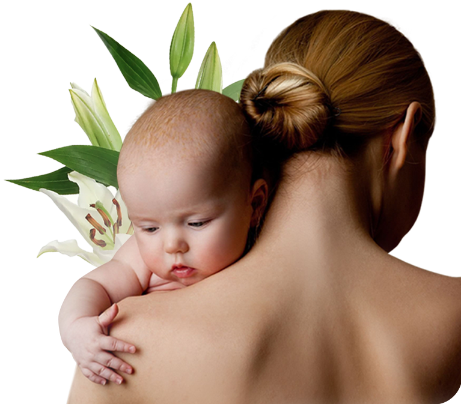

В помощь маме
Клуб «В помощь маме»
Это то, что поможет вам быть спокойной и уверенной мамой. Понимать, что вы делаете все правильно для своего ребенка.
Вступить в клуб Что такое клуб
«В помощь маме»
Это закрытый чат в телеграме, где собрались четыре суперважных специалиста – гинеколог и три педиатра. Чат работает в режиме 24/7. Все врачи придерживаются принципов доказательной медицины. У нас не бывает такого, что один говорит одно, а другой другое.
Вступить в клубКакие вопросы позволит решить чат?
-
Питание
кормящей мамы -
Грудное вскармливание
-
Введение прикорма
-
Вакцинация
-
Помощь при острых состояниях
-
Второе мнение
по назначениям педиатра -
Какие препараты точно не надо покупать
-
Контрацепция после родов
-
Здоровье мамы
-
Послеродовая
депрессия – как
не пропустить
Наши специалисты
Татьяна Зубарева
Врач-неонатолог высшей категории, консультант по грудному вскармливанию. Более 30 лет проработала врачом-неонатологом в роддоме кардиоцентра, а сейчас продолжает трудиться в отделении патологии новорождённых и недоношенных детей Самарской областной больницы имени Ивановой, 5 лет работает консультантом по грудному вскармливанию. Помогает мамам наладить и сохранить лактацию. Очень любит свою работу и своих пациентов. Тысячи счастливых мам стали спокойнее за своего ребёнка рядом с ней, научились кормить грудью и растят здорового малыша.
Софья Тверитинова
Врач-педиатр, консультант по грудному вскармливанию. В своей работе придерживается принципов доказательной медицины. Имеет вторую специальность – врач-рентгенолог. Большую часть своего пути отработала в бюджетной больнице. Сейчас работает в клинике Фомина города Пермь. Ведет блог, где рассказывает обо всем, что касается детей. Для нее важно, чтобы мамы не чувствовали себя виноватыми и наслаждались материнством. Вот уже 5 лет Софья помогает им в этом.
Ирина Облогина
Врач-педиатр, консультант по детскому сну. Практикует доказательную медицину и работает со сном в комплексном подходе. Из-за того, что средняя дочь родилась высокочувствительной, Ирина начала искать способы ее успокоить и немного поспать самой,. Благодаря приняла решение повысить квалификацию, получив знания консультанта по сну и грудному вскармливанию. Сейчас она ведет блог и проводит консультации по детскому сну и здоровью детей, помогает в вопросах ухода, прикорма, вакцинации и не только. Она воспитывает трёх дочек и считает, что с помощью здоровой еды, хорошего сна и качественной медицины можно помочь ребенку вырасти здоровым, а мамам — облегчить материнство.
Оксана Алимова
Врач акушер-гинеколог со стажем работы более 20 лет. Умеет понятно объяснять сложные вещи. Много знает про женское здоровье и продолжает получать новые знания. Расскажет, когда идти к гинекологу после родов, какие методы контрацепции работают, почему не надо прижигать эрозию. Оперативно ответит на все ваши вопросы и развеет страхи.